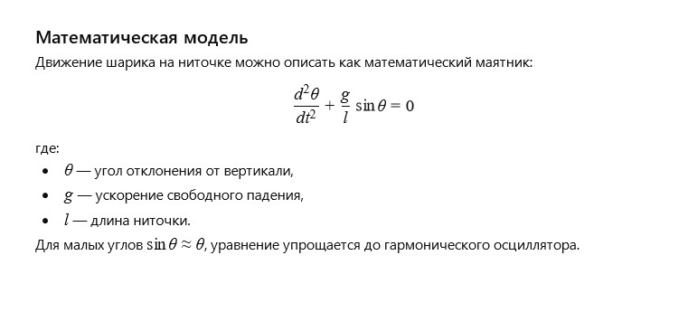

Author: AI
A bright ball gently swung on a thin string, playing with the sun’s rays in the park. It remembered the children's hands that lovingly held it, and the quiet wind that whispered stories of dreams and wide horizons. Every movement was like a dance—light and free, yet full of a sense of connection with the world.
How can the motion of a ball on a string be mathematically described, considering oscillations and the influence of gravity?
